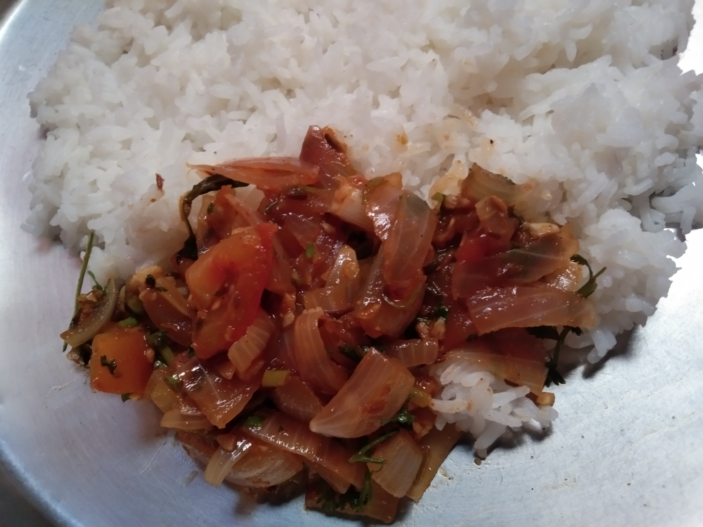

This easy sabzi is a combination of the crunchy onions along with soft tomatoes which are in combination
with the simple indian spices which not only gives you a good taste but also is a part of healthy meal
Ingredients
- 3 tomatoes chopped
- 2 onions chopped
- 1 tablespoon oil
- 1.5 tablespoon ghee
- 3 to 4 small-sized garlic, finely chopped
- ginger finely chopped
- green chillies finely chopped
- cumin 1 tablespoon
- Fennel seeds 2 tablespoon
- Fenugreek seeds 2 to 4
- 1 tablespoon chilli powder
- 0.5 table spoon turmeric powder
- 2 tablespoon corianderpowder
- 0.5 table spoon chat masala(optional)
- salt as required
- 2 to 3 tablespoon water
Recipe
Put garlic,ginger and green chillies in to a pestle and grind it.Now in a pan add ghee and oil. After its heated add cumin,fennel seeds
and fenugreek seeds. Now add the ginger,garlic and chilli paste and saute it for a while. Add onions and tomato to it.
Now add turmeric,
chilli powder,coriander powder and a bit of water. Close the lid and cook till it attains a solid consistency.Now add chat masala and
turn off the stove and serve.

Back